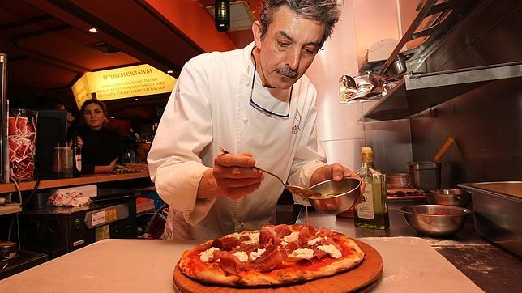

Nuestra Historia
Desde 1990 situada en el corazón de una ciudad apasionada y estimulante. Protagonista de los momentos dorados de la mítica Avenida Corrientes. Testigo del infinito paso del tiempo que atraviesa la memoria emotiva de los porteños. Una atmósfera que produce una experiencia auténtica que no puede ser vivida en otro lugar. La suma de las características de Rosendo son únicas e irrepetibles y conforman lo que se denomina: “El espíritu del lugar”.
